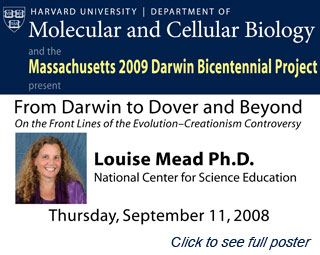

News Archives : 2008 : Seminar to Celebrate Darwin's Bicentennial
by Ishara Mills-Henry
August 8, 2008
|  |
On September 11, 2008, Harvard’s Department of Molecular and Cellular Biology and the Massachusetts 2009 Darwin Bicentennial Project will host “From Darwin to Dover and Beyond: On the Front Lines of the Evolution-Creationism Controversy”.
The lecture, to be held at noon in the Sherman Fairchild Lecture Hall, features Dr. Louise Mead, Education Project Director at the National Center for Science Education. Dr. Mead is responsible for outreach to the education community, specifically as it relates to the mission of NCSE: defending the teaching of evolution in the public-school science classroom. Dr. Mead received a Master of Education degree, and a Ph.D. in Organismic and Evolutionary Biology from the University of Massachusetts. She has been a high-school science teacher and university lecturer. In addition to the lecture, she will present a workshop titled “Overcoming the Obstacles to Evolution Education” for individuals interested in teaching evolution.
The Massachusetts 2009 Darwin Bicentennial Project Committee comprises professors, educators, and scientists from several area colleges and universities. At Harvard, Professor Janet Browne, in the History of Science department, MCB Professor John Dowling, and MCB postdoc Ishara Mills-Henry of the Dowling lab have been actively involved in events surrounding Darwin’s Bicentennial. The goal of the project is to encourage Darwin Bicentennial events at colleges and universities, promote discussions on evolution in local school districts, and provide open forums for scientists and the local community. Next year, 2009, will be the 200th anniversary of the birth of Charles Darwin and the 150th anniversary of the publication of Darwin’s On The Origin of Species. With the accelerating accumulation of data on the nature of genomes, cells, organisms, and ecosystems, as well as increasing knowledge and appreciation of the importance of the Earth’s atmosphere and history, Darwin’s contributions are as important now as they were in 1859. Given the effort of anti-evolution groups over the past few years to interfere with the teaching of evolution in schools, the public recognition of Darwin’s contributions and the importance of evolution is particularly timely.
Over the next few months, many universities will host celebrations, including a symposium at the MIT Museum on January 24-26. Speakers include Harvard University Professors Janet Browne and John Dowling. For more details on these events, please visit the Massachusetts 2009 Darwin Bicentennial Project website.